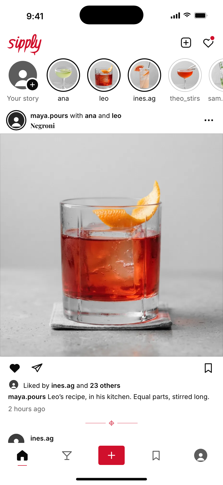
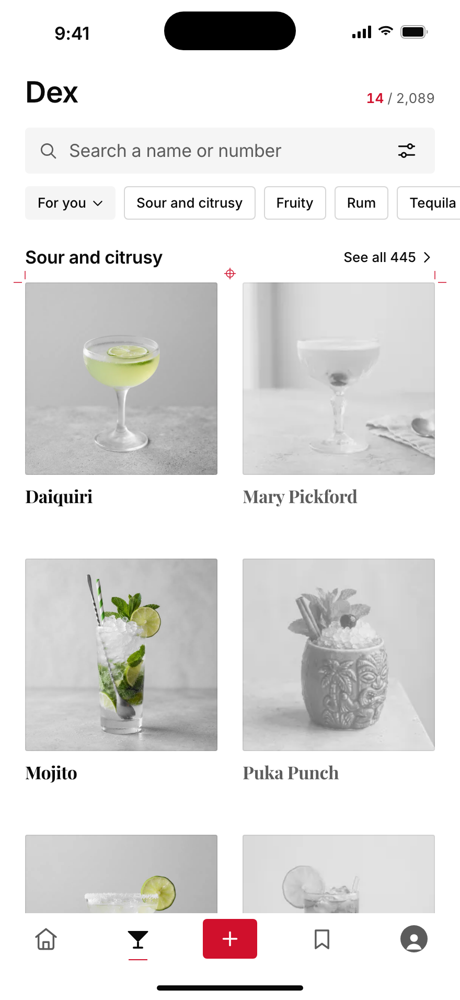
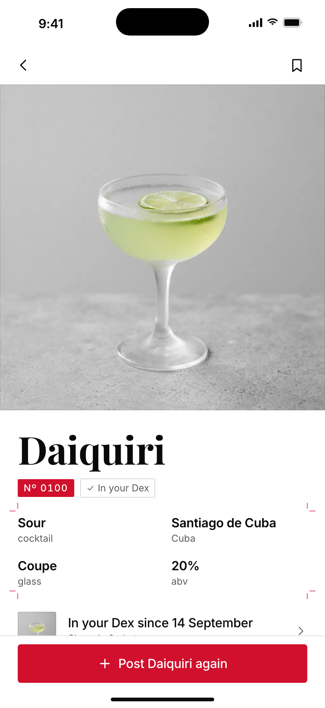
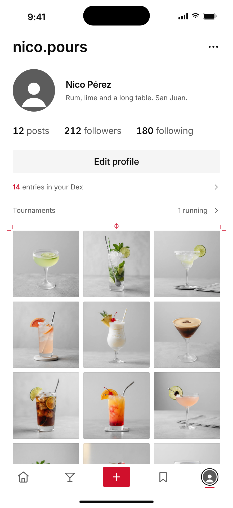
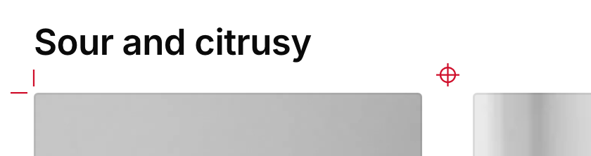
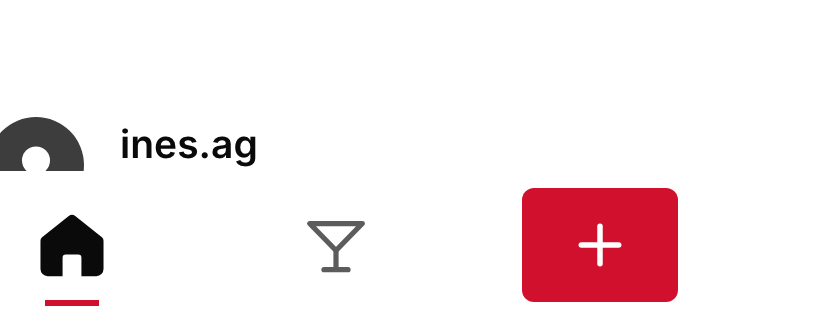
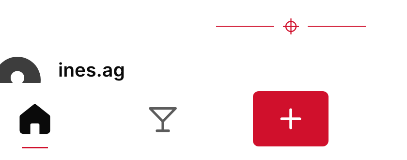

A printer’s proof sheet, in Campari hairlines. Crop marks where a sheet of prints begins, one registration mark as the ornament, a 1 pt line under where you are. No words, counts or icons added; full-bleed photos, keys and bars carry nothing.

Home · 2 details
Dinkus between posts: the registration mark with 40 pt hairlines. Active line under Home, now 1 pt.

Dex · 2 details
Sheet head on the section grid: crop marks on its outer corners, the registration mark centred on the trim. Active line.

Drink page · 1 detail
Crop marks on the four facts, read as a spec sheet. The hero bleeds, so it carries none; the plate and the key are already red.

Profile · 2 details
Sheet head on your print grid, the same as Dex. Active line under your face.
1 · The sheet head, 3x
Crop marks 8 pt × 0.75 pt, 3 pt off the trim; the mark: ring r 3.5, cross 11 pt, 0.75 pt.
Before (v4.4)
After

2 · The dinkus and the active line, 3x
Hairlines 0.5 pt; the tab line goes from 18 × 2 to 18 × 1.
Before (v4.4)

After

Crop marksTwo 8 pt strokes per corner, outside the trim, on the outer corners of a group only, never per tile.
Registration markThe one ornament: once per screen, on a resting surface, never near a control.
DinkusThe mark flanked by 40 pt hairlines: the pause between posts, and the end of a long list.
Active line18 × 1 pt under the active tab or TabStrip label. The only detail that is state.
Open frame0.5 pt, corners left open: only round one small lone print (the catch card), not on these four screens.